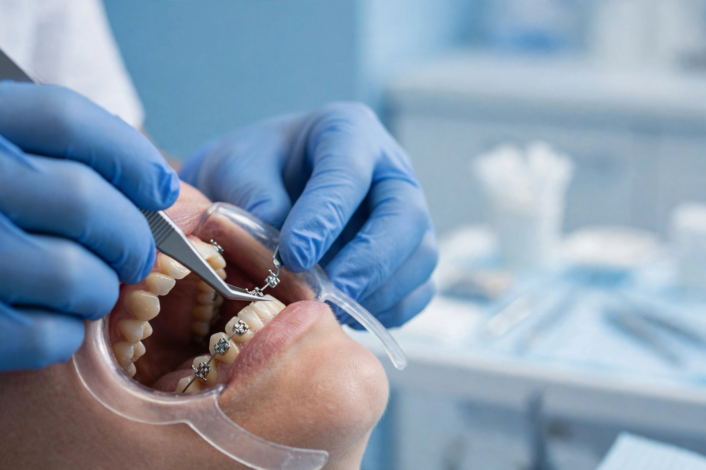
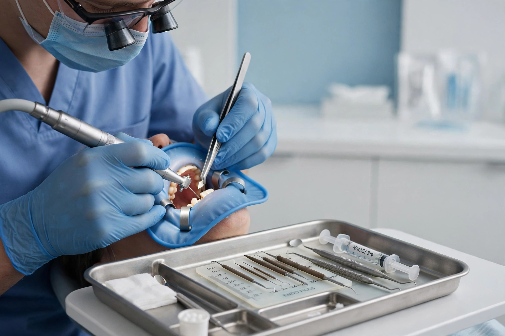
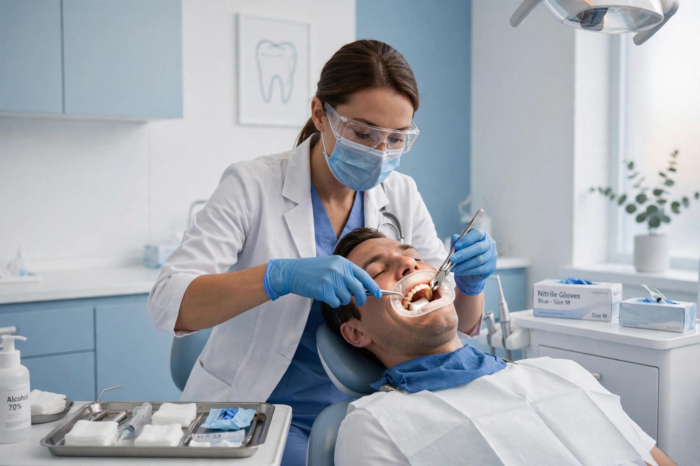

Ayuda al cliente
Conoce nuestros tratamientos dentales, sus beneficios y cuándo puede ser conveniente consultar con un profesional.
¿Qué es la ortodoncia y cuándo la necesito?

La ortodoncia es la especialidad que corrige la posición de los dientes y la mordida. Puede ser necesaria cuando los dientes están torcidos, apiñados, tienen espacios grandes o cuando la mordida no encaja bien y cuesta masticar. La duración del tratamiento depende de cada caso. Se pueden utilizar brackets metálicos o estéticos y realizar controles periódicos. Una buena alineación puede facilitar la limpieza dental y ayudar a mantener la salud de las encías. Para saber si necesitas ortodoncia, consulta con un dentista.
Consultar servicio¿Qué es la endodoncia y por qué duele el diente?

La endodoncia, conocida como tratamiento de conducto, se realiza cuando la pulpa del diente se inflama o se infecta, por ejemplo, debido a una caries profunda o un golpe. Puede presentarse dolor intenso y sensibilidad al frío o al calor. El tratamiento consiste en limpiar el interior del diente, retirar el tejido afectado, desinfectar los conductos y sellarlos. Después, el diente puede necesitar una reconstrucción. El procedimiento se realiza con anestesia local. Si tienes dolor dental, consulta con un profesional para determinar la causa.
Consultar servicioExtracción dental: ¿cuándo es necesaria?

La extracción se indica cuando un diente no se puede salvar, por ejemplo, debido a una caries muy avanzada, una fractura o una enfermedad periodontal severa. También puede ser necesaria en algunas muelas del juicio que causan problemas. Antes del procedimiento, el dentista evalúa el diente y puede solicitar una radiografía. La extracción se realiza con anestesia local. Después, es importante seguir las indicaciones profesionales, evitar fumar y no realizar enjuagues vigorosos durante las primeras horas. Si el sangrado es abundante o el dolor empeora, busca atención dental.
Consultar servicioLimpieza dental profesional: ¿cada cuánto hacerla?

La limpieza dental profesional elimina la placa bacteriana y el sarro que no se pueden retirar completamente con el cepillado. Puede realizarse con instrumentos especiales o ultrasonido y, cuando corresponde, pulido dental. La frecuencia recomendada depende de la salud bucal de cada persona; muchas personas acuden aproximadamente cada seis meses, mientras que otras necesitan controles más frecuentes. La limpieza ayuda a mantener las encías saludables, pero no reemplaza el cepillado ni el uso diario de hilo dental. Consulta al dentista para conocer la frecuencia adecuada para ti.
Consultar servicioOdontología infantil: ¿cómo preparar a tu niño?

La odontología infantil se ocupa de la salud bucal de bebés, niños y adolescentes. La primera visita al dentista se recomienda al aparecer el primer diente o, como máximo, alrededor del primer cumpleaños. Para reducir el miedo, es útil explicar la visita con palabras sencillas y positivas. Entre los cuidados y tratamientos que pueden indicarse están la aplicación de flúor, los sellantes, las curaciones y el seguimiento del desarrollo dental. Es importante mantener una buena higiene desde pequeños y acudir a revisiones periódicas.
Consultar servicioBlanqueamiento dental: qué esperar y qué cuidados tener

El blanqueamiento dental es un procedimiento que aclara el color de los dientes mediante productos específicos. No funciona de la misma manera en todas las personas y no aclara el color de resinas, coronas u otras restauraciones. Antes de realizarlo, el dentista debe revisar la salud bucal y determinar si es apropiado. Puede producir sensibilidad temporal. Después del tratamiento, sigue las indicaciones profesionales y mantén una buena higiene bucal. Evita utilizar productos blanqueadores sin orientación dental.
Consultar servicio